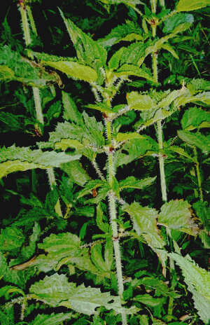
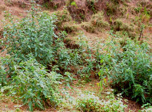

Future Plans
In order to bring about a change in attitudes and to stop the practice of littering, Green Hills proposes to intensify its interaction with children and youth. Internet searches reveal the existence of materials on the subject for children of different age groups and ideas for classroom activities. These need to be adapted to the situation in Almora, translated into Hindi and illustrated with photos that demonstrate the problem and show possible solutions.Presentations using audio-visual materials will then be made to the different age groups in public and private schools of Almora.
Cultural actionStreet plays and songs to motivate the public to clean and green their surroundings will be produced by the Youth Committee of Green Hills and performed from time to time in different parts of the town and district.
Shramdaan by residentsEach month, students from one school will undertake to clean an area chosen by them and do wall paintings to beautify the area and give a message to passers-by about reuse and recycling of waste. Other students will speak to shop keepers to make them sign a commitment to help keep the market clean.
Clean-up programmes in villagesAt present, no arrangements for collection or disposal of waste exist in the gram panchayats of Almora District. Green Hills plans to mobilise the residents of three areas surrounding Almora town to co-operate in a waste management programme. Preparations have begun in Paparsali, Maat and Kasar Devi, a tourist zone, in which the Hotel and Resort Association of Almora as well as a local NGO, NCVS, will assist Green Hills in creating a model of environment-friendly waste management. (Link to Paparsali Kasar Devi Clean Up), A monthly contribution has been collected from households, shops, guest houses and resorts that will be used to pay the salary of a person employed to sweep the road, collect sorted waste door-to-door, store what can be recycled and incinerate insanitary waste. and owners of commercial establishments. ShramDaan will be undertaken by the residents once a month to clean roadsides, drains and pathways in the area.
A few months later, lessons learned from this initiative will be applied in two other areas on the outskirts of the town. It is hoped that if these initiatives show good results, the Nagar Palika can be motivated to implement similar measures in neighbourhoods of Almora town with the support of the Union of Safai Karmcharis.
Use of plastic in road constructionNegotiations will continue with the Public Works Department, Kumaon, for them to use the plastic being collected in these gram panchayats to build roads in the District using the technique developed by Dr.Vasudevan that has proved successful in several States of South India.
Membership driveWe aim to increase the membership of Green Hills to 10,000 members so as to form a critical mass to influence policy and practice of the local authorities.
This web-site will be regularly updated with news of activities undertaken and with technical resources for environment-friendly waste management, reforestation and organic farming. A Facebook page has already been created and will be managed by some of the members of the Youth Committee.
 Can this plant (urtica dioica) that grows wild in Uttarakhand become a source of nutrition for people who are finding it increasingly difficult to farm because their crops are often destroyed by monkeys, wild boar and other wild animals? The medicinal and nutritional properties of nettle are well known across the world. Its leaves, stem and roots contain high concentrations of protein, Vitamin A as well as iron, calcium, magnesium and many other trace elements(Cu, Zn, Mn and Co) required by the human body. It is an excellent supplement to a wheat-based diet as it contains lysine, an amino acid in which wheat is deficient. In fact, it has a better amino acid profile than other leafy vegetables. It is a hardy, disease and animal resistant plant that can grow in poor soil and in erratic climatic conditions. It has also proved effective in controlling white grub (kurmula), a pest that kills plants be devouring the roots.

Green Hills has recently been mandated by the G. B. Pant Institute of Himalayan Environment and Devleopment to explore the possibilities of growing it as a commercial crop in the foothills of the Himalayas. Standard Operating Procedures for planting, harvesting and processing different parts of the plant will be established over the next three years. This action research is expected to boost organic farming, offer an alternative source of livelihood to small farmers and thus help stem the tide of labour migration from the hills towards cities.